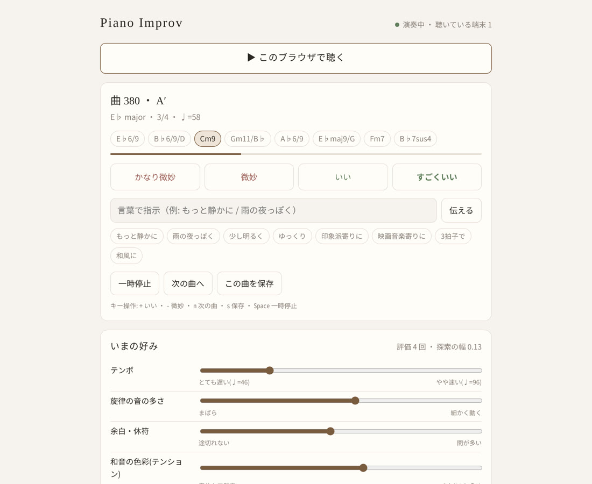

Amane
落ち着いて優雅なピアノを、ずっと即興で弾き続ける AI。
聴きながら「いい」「微妙」と伝えると、だんだん好みに寄っていきます。
デモ演奏 3 曲
0:000:00
これは何か
- 印象派（サティ・ドビュッシー的な平行和音・揺れる maj7）と、日本の映画音楽系（王道進行・カノン風の下降バス・ヨナ抜き）のあいだで、曲を次々に作って弾き続けます
- 好みは、テンポ・余白・和音の色彩・短調の多さなど 15 個の値。少しずつずらしながら弾き、「いい」と言われた方へ寄せていきます
- 言葉（「もっと静かに」「雨の夜っぽく」）や、好きな曲の MIDI でも教えられます
- 作曲は音楽理論のルールと乱数。GPU はいりません。音は Salamander Grand Piano
このページの 3 曲は、まだ何も教えていない初期設定で弾いたものです。自分の PC で動かすと、ブラウザから評価や言葉の指示ができます。
